Vice City
Cheat codes
| Image | Effect | Codes |
|---|---|---|
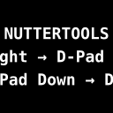 | Advanced weapons set ( Chainsaw , Grenades , .357 , S.P.A.S. 12 , SMG , M4 , .308 Sniper , Minigun ) | PC / AndroidNUTTERTOOLSPlayStationR1 → R2 → L1 → R2 → D-Pad Left → D-Pad Down → D-Pad Right → D-Pad Up → D-Pad Left → D-Pad Down → D-Pad Down → D-Pad DownXboxRight Trigger (RT) → Black → Left Trigger (LT) → Black → D-Pad Left → D-Pad Down → D-Pad Left → D-Pad Up → D-Pad Left → D-Pad Down → D-Pad Down → D-Pad Down |
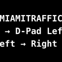 | Aggressive drivers | PC / AndroidMIAMITRAFFICPlayStationR2 → Circle → R1 → L2 → D-Pad Left → R1 → L1 → R2 → L2XboxBlack → B → Right Trigger (RT) → White → D-Pad Left → Right Trigger (RT) → Left Trigger (LT) → Black → White |
 | All traffic cars are black (bright green in The Definitive Edition ) | PC / AndroidIWANTITPAINTEDBLACKPlayStationCircle → L2 → D-Pad Up → R1 → D-Pad Left → Cross → R1 → L1 → D-Pad Left → CircleXboxB → White → D-Pad Up → Right Trigger (RT) → D-Pad Left → A → Right Trigger (RT) → Left Trigger (LT) → D-Pad Left → B |
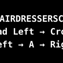 | All traffic cars are pink | PC / AndroidAHAIRDRESSERSCARPlayStationCircle → L1 → D-Pad Down → L2 → D-Pad Left → Cross → R1 → L1 → D-Pad Right → CircleXboxB → Left Trigger (LT) → D-Pad Down → White → D-Pad Left → A → Right Trigger (RT) → Left Trigger (LT) → D-Pad Left → A |
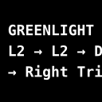 | All traffic lights are green | PC / AndroidGREENLIGHTPlayStationD-Pad Right → R1 → D-Pad Up → L2 → L2 → D-Pad Left → R1 → L1 → R1 → R1XboxD-Pad Left → Right Trigger (RT) → D-Pad Up → White → White → D-Pad Left → Right Trigger (RT) → Left Trigger (LT) → Right Trigger (RT) → Right Trigger (RT) |
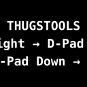 | Basic weapons set ( Brass Knuckles , Baseball Bat , Molotov Cocktails , Pistol , Chrome Shotgun , Tec 9 , Ruger , Sniper Rifle , Flamethrower ) | PC / AndroidTHUGSTOOLSPlayStationR1 → R2 → L1 → R2 → D-Pad Left → D-Pad Down → D-Pad Right → D-Pad Up → D-Pad Left → D-Pad Down → D-Pad Right → D-Pad UpXboxRight Trigger (RT) → Black → Left Trigger (LT) → Black → D-Pad Left → D-Pad Down → D-Pad Left → D-Pad Up → D-Pad Left → D-Pad Down → D-Pad Left → D-Pad Up |
 | Blow up/explode/destroy all vehicles, excluding police-controlled helicopters and NPC Dodo | PC / AndroidBIGBANGPlayStationR2 → L2 → R1 → L1 → L2 → R2 → Square → Triangle → Circle → Triangle → L2 → L1XboxBlack → White → Right Trigger (RT) → Left Trigger (LT) → White → Black → X → Y → B → Y → White → Left Trigger (LT) |
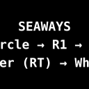 | Cars can drive/hover over water | PC / AndroidSEAWAYSPlayStationD-Pad Right → R2 → Circle → R1 → L2 → Square → R1 → R2XboxD-Pad Left → Black → B → Right Trigger (RT) → White → X → Right Trigger (RT) → Black |
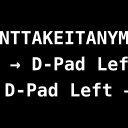 | Commit suicide or, with sufficiently high health, suffer major loss of health | PC / AndroidICANTTAKEITANYMOREPlayStationD-Pad Right → L2 → D-Pad Down → R1 → D-Pad Left → D-Pad Left → R1 → L1 → L2 → L1XboxD-Pad Left → White → D-Pad Down → Right Trigger (RT) → D-Pad Left → D-Pad Left → Right Trigger (RT) → Left Trigger (LT) → White → Left Trigger (LT) |
 | Decrease game speed by half, down to x0.25 normal speed | PC / AndroidBOOOOOORINGPlayStationTriangle → D-Pad Up → D-Pad Right → D-Pad Down → Square → R2 → R1XboxY → D-Pad Up → D-Pad Left → D-Pad Down → X → Black → Right Trigger (RT) |
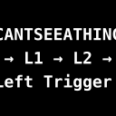 | Foggy weather | PC / AndroidCANTSEEATHINGPlayStationR2 → Cross → L1 → L1 → L2 → L2 → L2 → CrossXboxBlack → A → Left Trigger (LT) → Left Trigger (LT) → White → White → White → A |
| Gives Tommy thick arms/legs | PC / AndroidDEEPFRIEDMARSBARS | |
 | Gives Tommy thin arms/legs | PC / AndroidPROGRAMMER |
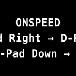 | Increase game speed by 2, up to x4 normal speed | PC / AndroidONSPEEDPlayStationTriangle → D-Pad Up → D-Pad Right → D-Pad Down → L2 → L1 → SquareXboxY → D-Pad Up → D-Pad Left → D-Pad Down → White → Left Trigger (LT) → X |
 | Increase grip on ground, boost jump ability in all cars, disables unique stunt jumps | PC / AndroidGRIPISEVERYTHINGPlayStationTriangle → R1 → R1 → D-Pad Left → R1 → L1 → R2 → L1XboxY → Right Trigger (RT) → Right Trigger (RT) → D-Pad Left → Right Trigger (RT) → Left Trigger (LT) → Black → Left Trigger (LT) |
 | Increase wanted level by two stars | PC / AndroidYOUWONTTAKEMEALIVEPlayStationR1 → R1 → Circle → R2 → D-Pad Left → D-Pad Right → D-Pad Left → D-Pad Right → D-Pad Left → D-Pad RightXboxRight Trigger (RT) → Right Trigger (RT) → B → Black → D-Pad Left → D-Pad Left → D-Pad Left → D-Pad Left → D-Pad Left → D-Pad Left |
 | Intermediate weapons set ( Katana , Detonator Grenade , .357 , Stubby Shotgun , Mac 10 , M4 , .308 Sniper , Rocket Launcher ) | PC / AndroidPROFESSIONALTOOLSPlayStationR1 → R2 → L1 → R2 → D-Pad Left → D-Pad Down → D-Pad Right → D-Pad Up → D-Pad Left → D-Pad Down → D-Pad Down → D-Pad LeftXboxRight Trigger (RT) → Black → Left Trigger (LT) → Black → D-Pad Left → D-Pad Down → D-Pad Left → D-Pad Up → D-Pad Left → D-Pad Down → D-Pad Down → D-Pad Left |
 | Light clouds | PC / AndroidAPLEASANTDAYPlayStationR2 → Cross → L1 → L1 → L2 → L2 → L2 → TriangleXboxBlack → A → Left Trigger (LT) → Left Trigger (LT) → White → White → White → Y |
| Low gravity for boats, boats control like plane in air | PC / AndroidAIRSHIP | |
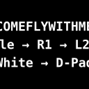 | Low gravity for cars, cars control like plane in air | PC / AndroidCOMEFLYWITHMEPlayStationD-Pad Right → R2 → Circle → R1 → L2 → D-Pad Down → L1 → R1XboxD-Pad Left → Black → B → Right Trigger (RT) → White → D-Pad Down → Left Trigger (LT) → Right Trigger (RT) |
| Makes Tommy smoke a cigarette | PC / AndroidCERTAINDEATH | |
| Nearby pedestrians will enter Tommy's vehicle | PC / AndroidHOPINGIRL | |
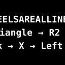 | Only the wheels of cars are visible | PC / AndroidWHEELSAREALLINEEDPlayStationTriangle → L1 → Triangle → R2 → Square → L1 → L1XboxY → Left Trigger (LT) → Y → Black → X → Left Trigger (LT) → Left Trigger (LT) |
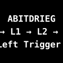 | Overcast weather | PC / AndroidABITDRIEGPlayStationR2 → Cross → L1 → L1 → L2 → L2 → L2 → SquareXboxBlack → A → Left Trigger (LT) → Left Trigger (LT) → White → White → White → X |
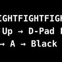 | Pedestrian riot (irreversible) | PC / AndroidFIGHTFIGHTFIGHTPlayStationD-Pad Down → D-Pad Left → D-Pad Up → D-Pad Left → Cross → R2 → R1 → L2 → L1XboxD-Pad Down → D-Pad Left → D-Pad Up → D-Pad Left → A → Black → Right Trigger (RT) → White → Left Trigger (LT) |
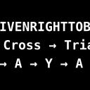 | Pedestrians carry weapons (Pistol, Nightstick, Golf Club, Tec 9) | PC / AndroidOURGODGIVENRIGHTTOBEARARMSPlayStationR2 → R1 → Cross → Triangle → Cross → Triangle → D-Pad Up → D-Pad DownXboxBlack → Right Trigger (RT) → A → Y → A → Y → D-Pad Up → D-Pad Down |
 | Pedestrians hate Tommy (irreversible) | PC / AndroidNOBODYLIKESMEPlayStationD-Pad Down → D-Pad Up → D-Pad Up → D-Pad Up → Cross → R2 → R1 → L2 → L2XboxD-Pad Down → D-Pad Up → D-Pad Up → D-Pad Up → A → Black → Right Trigger (RT) → White → White |
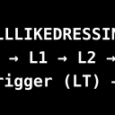 | Play as a pedestrian | PC / AndroidSTILLLIKEDRESSINGUPPlayStationD-Pad Right → D-Pad Right → D-Pad Left → D-Pad Up → L1 → L2 → D-Pad Left → D-Pad Up → D-Pad Down → D-Pad RightXboxD-Pad Left → D-Pad Left → D-Pad Left → D-Pad Up → Left Trigger (LT) → White → D-Pad Left → D-Pad Up → D-Pad Down → D-Pad Left |
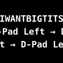 | Play as Candy Suxxx | PC / AndroidIWANTBIGTITSPlayStationCircle → R2 → D-Pad Down → R1 → D-Pad Left → D-Pad Right → R1 → L1 → Cross → L2XboxB → Black → D-Pad Down → Right Trigger (RT) → D-Pad Left → D-Pad Left → Right Trigger (RT) → Left Trigger (LT) → A → White |
 | Play as Hilary King | PC / AndroidILOOKLIKEHILARYPlayStationR1 → Circle → R2 → L1 → D-Pad Right → R1 → L1 → Cross → R2XboxRight Trigger (RT) → B → Black → Left Trigger (LT) → D-Pad Left → Right Trigger (RT) → Left Trigger (LT) → A → Black |
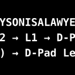 | Play as Ken Rosenberg | PC / AndroidMYSONISALAWYERPlayStationD-Pad Right → L1 → D-Pad Up → L2 → L1 → D-Pad Right → R1 → L1 → Cross → R1XboxD-Pad Left → Left Trigger (LT) → D-Pad Up → White → Left Trigger (LT) → D-Pad Left → Right Trigger (RT) → Left Trigger (LT) → A → Right Trigger (RT) |
 | Play as Lance Vance | PC / AndroidLOOKLIKELANCEPlayStationCircle → L2 → D-Pad Left → Cross → R1 → L1 → Cross → L1XboxB → White → D-Pad Left → A → Right Trigger (RT) → Left Trigger (LT) → A → Left Trigger (LT) |
 | Play as Love Fist character Dick | PC / AndroidWELOVEOURDICKPlayStationR1 → L2 → R2 → L1 → D-Pad Right → R2 → D-Pad Left → Cross → Square → L1XboxRight Trigger (RT) → White → Black → Left Trigger (LT) → D-Pad Left → Black → D-Pad Left → A → X → Left Trigger (LT) |
 | Play as Love Fist character Jezz Torrent | PC / AndroidROCKANDROLLMANPlayStationD-Pad Down → L1 → D-Pad Down → L2 → D-Pad Left → Cross → R1 → L1 → Cross → CrossXboxD-Pad Down → Left Trigger (LT) → D-Pad Down → White → D-Pad Left → A → Right Trigger (RT) → Left Trigger (LT) → A → A |
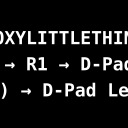 | Play as Mercedes Cortez | PC / AndroidFOXYLITTLETHINGPlayStationR2 → L1 → D-Pad Up → L1 → D-Pad Right → R1 → D-Pad Right → D-Pad Up → Circle → TriangleXboxBlack → Left Trigger (LT) → D-Pad Up → Left Trigger (LT) → D-Pad Left → Right Trigger (RT) → D-Pad Left → D-Pad Up → B → Y |
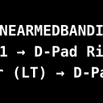 | Play as Phil Cassidy | PC / AndroidONEARMEDBANDITPlayStationD-Pad Right → R1 → D-Pad Up → R2 → L1 → D-Pad Right → R1 → L1 → D-Pad Right → CircleXboxD-Pad Left → Right Trigger (RT) → D-Pad Up → Black → Left Trigger (LT) → D-Pad Left → Right Trigger (RT) → Left Trigger (LT) → D-Pad Left → B |
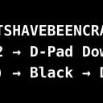 | Play as Ricardo Diaz | PC / AndroidCHEATSHAVEBEENCRACKEDPlayStationL1 → L2 → R1 → R2 → D-Pad Down → L1 → R2 → L2XboxLeft Trigger (LT) → White → Right Trigger (RT) → Black → D-Pad Down → Left Trigger (LT) → Black → White |
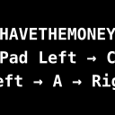 | Play as Sonny Forelli | PC / AndroidIDONTHAVETHEMONEYSONNYPlayStationCircle → L1 → Circle → L2 → D-Pad Left → Cross → R1 → L1 → Cross → CrossXboxB → Left Trigger (LT) → B → White → D-Pad Left → A → Right Trigger (RT) → Left Trigger (LT) → A → A |
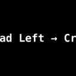 | Police come back to life after being killed | PlayStationCircle → L1 → D-Pad Down → L2 → D-Pad Left → Cross → R1 → L1 → D-Pad Right → Cross |
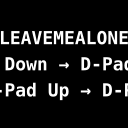 | Remove all wanted level (on Android, lower wanted level by two stars) | PC / AndroidLEAVEMEALONEPlayStationR1 → R1 → Circle → R2 → D-Pad Up → D-Pad Down → D-Pad Up → D-Pad Down → D-Pad Up → D-Pad DownXboxRight Trigger (RT) → Right Trigger (RT) → B → Black → D-Pad Up → D-Pad Down → D-Pad Up → D-Pad Down → D-Pad Up → D-Pad Down |
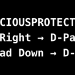 | Replenish player armor | PC / AndroidPRECIOUSPROTECTIONPlayStationR1 → R2 → L1 → Cross → D-Pad Left → D-Pad Down → D-Pad Right → D-Pad Up → D-Pad Left → D-Pad Down → D-Pad Right → D-Pad UpXboxRight Trigger (RT) → Black → Left Trigger (LT) → A → D-Pad Left → D-Pad Down → D-Pad Left → D-Pad Up → D-Pad Left → D-Pad Down → D-Pad Left → D-Pad Up |
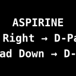 | Replenish player health; if driving vehicle, replenish health and fixes tires of vehicle | PC / AndroidASPIRINEPlayStationR1 → R2 → L1 → Circle → D-Pad Left → D-Pad Down → D-Pad Right → D-Pad Up → D-Pad Left → D-Pad Down → D-Pad Right → D-Pad UpXboxRight Trigger (RT) → Black → Left Trigger (LT) → B → D-Pad Left → D-Pad Down → D-Pad Left → D-Pad Up → D-Pad Left → D-Pad Down → D-Pad Left → D-Pad Up |
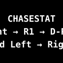 | Shows media level when previous media level is beaten | PC / AndroidCHASESTATPlayStationR2 → Circle → D-Pad Up → L1 → D-Pad Right → R1 → D-Pad Right → D-Pad Up → Square → TriangleXboxBlack → B → D-Pad Up → Left Trigger (LT) → D-Pad Left → Right Trigger (RT) → D-Pad Left → D-Pad Up → X → Y |
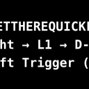 | Spawn a Bloodring Banger ( Glendale variant) | PC / AndroidGETTHEREQUICKLYPlayStationD-Pad Up → D-Pad Right → D-Pad Right → L1 → D-Pad Right → D-Pad Up → Square → L2XboxD-Pad Up → D-Pad Left → D-Pad Left → Left Trigger (LT) → D-Pad Left → D-Pad Up → X → White |
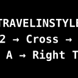 | Spawn a Bloodring Banger ( Oceanic variant) | PC / AndroidTRAVELINSTYLEPlayStationD-Pad Down → R1 → Circle → L2 → L2 → Cross → R1 → L1 → D-Pad Left → D-Pad LeftXboxD-Pad Down → Right Trigger (RT) → Black → White → White → A → Right Trigger (RT) → Left Trigger (LT) → D-Pad Left → D-Pad Left |
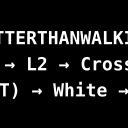 | Spawn a Caddy | PC / AndroidBETTERTHANWALKINGPlayStationCircle → L1 → D-Pad Up → R1 → L2 → Cross → R1 → L1 → Circle → CrossXboxB → Left Trigger (LT) → D-Pad Up → Right Trigger (RT) → White → A → Right Trigger (RT) → Left Trigger (LT) → B → A |
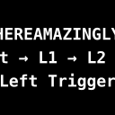 | Spawn a Hotring Racer (second variant) | PC / AndroidGETTHEREAMAZINGLYFASTPlayStationR1 → Circle → R2 → D-Pad Right → L1 → L2 → Cross → Cross → Square → R1XboxRight Trigger (RT) → B → Black → D-Pad Left → Left Trigger (LT) → White → A → A → X → Right Trigger (RT) |
 | Spawn a Hotring Racer (third variant) | PC / AndroidGETTHEREVERYFASTINDEEDPlayStationR2 → L1 → Circle → D-Pad Right → L1 → R1 → D-Pad Right → D-Pad Up → Circle → R2XboxBlack → Left Trigger (LT) → B → D-Pad Left → Left Trigger (LT) → Right Trigger (RT) → D-Pad Left → D-Pad Up → B → Black |
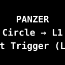 | Spawn a Rhino (On Android, instead of a tank, the first time the cheat is used a Landstalker spawns, after which random cars are spawned) | PC / AndroidPANZERPlayStationCircle → Circle → L1 → Circle → Circle → Circle → L1 → L2 → R1 → Triangle → Circle → TriangleXboxB → B → Left Trigger (LT) → B → B → B → Left Trigger (LT) → White → Right Trigger (RT) → Y → B → Y |
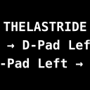 | Spawn a Romero's Hearse | PC / AndroidTHELASTRIDEPlayStationD-Pad Down → R2 → D-Pad Down → R1 → L2 → D-Pad Left → R1 → L1 → D-Pad Left → D-Pad RightXboxD-Pad Down → Black → D-Pad Down → Right Trigger (RT) → White → D-Pad Left → Right Trigger (RT) → Left Trigger (LT) → D-Pad Left → D-Pad Left |
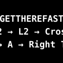 | Spawn a Sabre Turbo | PC / AndroidGETTHEREFASTPlayStationD-Pad Right → L2 → D-Pad Down → L2 → L2 → Cross → R1 → L1 → Circle → D-Pad LeftXboxD-Pad Left → White → D-Pad Down → White → White → A → Right Trigger (RT) → Left Trigger (LT) → B → D-Pad Left |
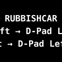 | Spawn a Trashmaster | PC / AndroidRUBBISHCARPlayStationCircle → R1 → Circle → R1 → D-Pad Left → D-Pad Left → R1 → L1 → Circle → D-Pad RightXboxB → Right Trigger (RT) → B → Right Trigger (RT) → D-Pad Left → D-Pad Left → Right Trigger (RT) → Left Trigger (LT) → B → D-Pad Left |
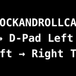 | Spawn Love Fist | PC / AndroidROCKANDROLLCARPlayStationR2 → D-Pad Up → L2 → D-Pad Left → D-Pad Left → R1 → L1 → Circle → D-Pad RightXboxBlack → D-Pad Up → White → D-Pad Left → D-Pad Left → Right Trigger (RT) → Left Trigger (LT) → B → D-Pad Left |
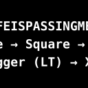 | Speed up game clock | PC / AndroidLIFEISPASSINGMEBYPlayStationCircle → Circle → L1 → Square → L1 → Square → Square → Square → L1 → Triangle → Circle → TriangleXboxB → B → Left Trigger (LT) → X → Left Trigger (LT) → X → X → X → Left Trigger (LT) → Y → B → Y |
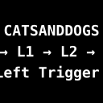 | Stormy weather | PC / AndroidCATSANDDOGSPlayStationR2 → Cross → L1 → L1 → L2 → L2 → L2 → CircleXboxBlack → A → Left Trigger (LT) → Left Trigger (LT) → White → White → White → B |
 | Sunny/clear weather | PC / AndroidALOVELYDAYPlayStationR2 → Cross → L1 → L1 → L2 → L2 → L2 → D-Pad DownXboxBlack → A → Left Trigger (LT) → Left Trigger (LT) → White → White → White → D-Pad Down |
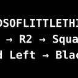 | Various changes to vehicle properties, including wheel size, top speed, acceleration, and handling. | PC / AndroidLOADSOFLITTLETHINGSPlayStationR1 → Cross → Triangle → D-Pad Right → R2 → Square → D-Pad Up → D-Pad Down → SquareXboxRight Trigger (RT) → A → Y → D-Pad Left → Black → X → D-Pad Up → D-Pad Down → X |
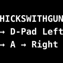 | Vercetti Gang will become girls in bikinis with M4s | PC / AndroidCHICKSWITHGUNSPlayStationD-Pad Right → L1 → Circle → L2 → D-Pad Left → Cross → R1 → L1 → L1 → CrossXboxD-Pad Left → Left Trigger (LT) → B → White → D-Pad Left → A → Right Trigger (RT) → Left Trigger (LT) → Left Trigger (LT) → A |
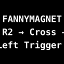 | Women will be attracted to and follow Tommy | PC / AndroidFANNYMAGNETPlayStationCircle → Cross → L1 → L1 → R2 → Cross → Cross → Circle → TriangleXboxB → A → Left Trigger (LT) → Left Trigger (LT) → Black → A → A → B → Y |